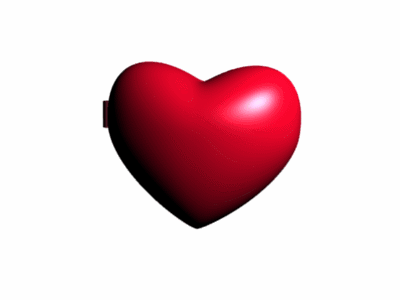

it's been 189 days ever since I met you,
time sure goes fast doesn't it?
and a lot has changed between us... ever since then
you were only a "friend i met in genshin" back then...
but now you're someone i cannot live without
what would you write in a letter, Chim?
letters are meant to be opportunities where
people share their deepest, honest feelings to each other
i don't want to repeat what we've been telling each other on a daily basis
valentines are supposed to be special...
.
.
.
currently i'm watching you on Visual Studio Code
even though you came back from picking up your cousin you didn't text me as to not "wake me up" or bother me (unbeknownst to you, i set my status to idle...)
(i am sorry my love)
ah, despite this day being a time to show appreciation for your closest, beloved one
i am afraid if your time spent reading this... will be worth it
because... you only deserve the best
in my head are all the times i dissatisfied you, and all the ways you may be dissatisfied with my online letter...
fear is so gluttonous, it consumes all of our heads
but it also allows us to be vulnerable, and rely on each other
in retrospect... you always knew how to make someone feel appreciated
you always knew what to say, how to make me feel better... even in the middle of work, you would stay with me... you would stay patient... and helped me calm down
i still look up to your sense of responsibility... to this day
you tell yourself that you're fragile
but what if i told you that in order to be kind, you must be strong. . . ?
pfft, this isn't just a passing remark... the fact that you struggle, shows that you haven't surrendered... and in order to struggle, guess what, you have to be strong.
it's interesting how media portrays love
love at first sight, something sets them apart, they overcome that thing and they live together happily ever after
their love is shaped by the love they felt at first sight, and the hardship they overcame together
and it's worth thinking about what shaped our love
i find it beautiful that... essentially, fear is one of the main ingredients of our relationship
because it's considered as a negative emotion
but ironically, it's what made us open, honest... it's what built the trust between us
it's what made our patience... sense of responsibility and commitment... appreciation for each other... shine
if there's something i can't put into words, this must be my chance to do so
but my words still fail to describe how special our relationship is
i truly believe that... this relationship, is one of a kind
only one in this world, and no more
only one rachim in this world, and no more
...no matter how many times i try to put it in words, my love for you, your beauty, your uniqueness... my appreciation for you... it's not enough, it'll never be enough
it's only something i can feel in my heart... i hope you can understand
i am sorry for all the times i let you down,
i am thankful for all the times you helped me get back on my feet,
and above all, i am happy to know that
i will be spending the rest of my life with you and no one else
roses are red,
in my heart, your image always shine
my dearest rachim,
